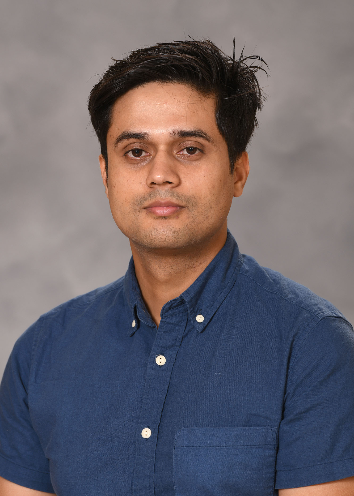

Senior Data Engineer, Researcher, Incoming PhD Student
I am a Senior Data Engineer and researcher with six years of experience in scalable data architecture and machine learning. I am transitioning into a PhD program in Computer and Statistical Sciences at the University of Rhode Island. My research interests focus on trustworthy and explainable AI, causal reasoning, algorithmic fairness, and biomedical applications.
Developing computational methods that prioritize rigorous methodology over surface performance to ensure AI is transparent and reliable for high-stakes decision-making.
Building models that capture true cause-and-effect relationships rather than mere correlations to distinguish genuine predictive signals from retrospective labels.
Investigating how to build equitable AI systems by exploring the intersection of machine learning and social science to prevent algorithms from perpetuating systemic flaws.
Applying machine learning to clinical decision support and disease phenotyping to transform noisy, unstructured clinical data into robust, actionable evidence.
Optimizing large-scale distributed pipelines and high-performance infrastructure to efficiently support complex modeling and real-world AI research at scale.
Exploring NLP tasks within the biomedical domain to make language models more robust, interpretable, and effective at handling sparse, high-dimensional clinical text.
I developed an end-to-end predictive analytics pipeline using HCUP inpatient datasets to forecast hospital readmissions and mortality. Over the course of the project, I trained and evaluated sixteen different machine learning and neural network models using metrics like AUC, ROC, precision, and recall. A major insight came while conducting an error analysis on the mortality model. I discovered target leakage was artificially boosting its accuracy by using billing codes generated after a patient's death. This experience deeply shaped my research philosophy, highlighting the fundamental limitation of models that optimize for accuracy without the causal reasoning needed to separate genuine predictive signals from retrospective labels. (You can view the code for this project on my GitHub repository).
In this project, I built a disease diagnosis classification system by mining biomedical literature. I extracted over 40,000 symptom-related clinical abstracts directly from PubMed. After implementing thorough NLP preprocessing, I trained and compared six different classifiers, ranging from traditional algorithms to deep learning models like CNNs and Bidirectional RNNs. Interestingly, I found that a Linear Support Vector Machine (SVM) outperformed the complex neural networks, achieving over 93% accuracy. This work proved to me that on sparse, high-dimensional feature spaces typical of medical text, simpler and more interpretable algorithms can often be far more effective and reliable than black-box deep learning approaches. (You can view the code for this project on my GitHub repository).
I led a project to predict player performance in the Fantasy Premier League by combining traditional statistics with public sentiment. Using the Twitter API, I collected a dataset of over 91,000 social media posts discussing specific players and teams. I explored different natural language processing techniques and found out that transformer-based roBERTa model was much better at understanding Twitter-specific jargon but it was significantly more computationally intensive. By integrating these sentiment-derived signals with standard time-series performance data, I was able to improve the overall prediction accuracy of models like LSTMs. This project was a great exercise in multi-modal feature integration, showing how qualitative public sentiment can be quantified to enhance predictive algorithms.
I designed GenAI solutions using Google Gemini, implementing RAG pipelines with embeddings and vector search. I enabled LLM-driven text classification and contextual inference for production data pipelines.
I am leading the migration of legacy Informatica ETL pipelines to AWS Glue with Apache Airflow. I am re-architecting mappings into Spark-native transformations, orchestrating batch workflows, and loading curated datasets into Snowflake.
I owned the design of cloud-native data pipelines on GCP using PySpark and Dataproc. I led the migration of on-prem Cloudera workloads, automated infrastructure with Terraform, built CI/CD pipelines, and deployed GenAI solutions using Google Gemini with RAG.
I built batch ETL pipelines for HIPAA-regulated healthcare data using Java, Python, Spark, and AWS. I performed large-scale data wrangling and contributed to risk prediction model development.
I taught CS courses for 150+ students, led lab sessions, conducted code reviews, and mentored incoming teaching assistants.
I served as a Graduate Assistant, promoting access, inclusion, and academic support for students with diverse learning needs.
University of Rhode Island
Computer and Statistical Sciences, Fall 2026 (Incoming)
East Tennessee State University
Machine Learning & AI, Aug 2021 - May 2023
GPA: 4.0 / 4.0
Kathmandu University
Aug 2013 - Oct 2017
I graduated in the top 5% of my class
I love hitting the trails and have completed several high-altitude treks across Nepal. My journey so far includes crossing the Annapurna Circuit (5,416m) and reaching spots like Mardi Himal Base Camp (4,500m), Gosainkunda (4,380m), Annapurna Base Camp (4,130m), Langtang Valley (3,870m), and Shey Phoksundo Lake (3,611m).
I'm a massive football (soccer) fan and a huge Arsenal FC supporter. I'm also a big Formula 1 enthusiast, Lewis Hamilton is my favorite driver.
I'm starting to get into visual storytelling and photography. I'm mostly focusing on developing a technical eye for composition and light. @shirishhhh
I'm currently trying my hand at distance running. I'm very much a beginner, just focusing on building up my endurance and trying to stay consistent.
I occasionally read up on different political systems and social structures, mostly out of personal curiosity about how things are organized behind the scenes.
I spend some time studying classical Jyotish. I enjoy applying an analytical and systematic approach to it, exploring personality patterns and life cycles through this ancient framework.